プログラマの為の
数学勉強会
第6回
(於)ワークスアプリケーションズ中村晃一
2013年10月17日
謝辞
この会の企画・会場設備の提供をして頂きました
㈱ ワークスアプリケーションズ様
にこの場をお借りして御礼申し上げます。
この資料について
- http://nineties.github.com/math-seminar に置いてあります。
- SVGに対応したブラウザで見て下さい。主要なブラウザで古いバージョンでなければ大丈夫だと思います。
- 内容の誤り、プログラムのバグは@9_tiesかkoichi.nakamur AT gmail.comまでご連絡下さい。
- サンプルプログラムはPythonで記述しています。
数値積分法
数値積分法
解析的に定積分を求める事が出来ない・難しい関数では数値計算によって定積分の値を求める事になります。

準備:ラグランジュ補間
データ列\((x_0, y_0),\ \cdots\ ,(x_n, y_n)\)が与えられた時に,\(x \neq x_i\)における\(y\)の値の近似値を与える関数\(y=f(x)\)を得る事を補間と言います。
下のグラフのように\(n+1\)個の点全てを通る\(n\)次多項式(これは唯一つに定まる)によって間を埋める補間法をラグランジュ補間と言います。
例えば\(x\)座標の異なる3つのデータ\((x_0, y_0),(x_1, y_1),(x_2, y_2)\)に対して \[ \begin{aligned} p_2(x) = &\frac{(x-x_1)(x-x_2)}{(x_0-x_1)(x_0-x_2)}y_0 + \frac{(x-x_0)(x-x_2)}{(x_1-x_0)(x_1-x_2)}y_1\\ & + \frac{(x-x_0)(x-x_1)}{(x_2-x_0)(x_2-x_1)}y_2 \end{aligned} \] という多項式関数を考えると,これは \[ p_2(x_0) = y_0,\ p_2(x_1) = y_1,\ p_2(x_2) = y_2 \cdots(1)\] を満たします。そして3点を通る放物線は一意に定まる事から,これが(1)を満たす唯一の二次多項式関数という事になります。
同様にして,一般にデータ列\((x_0,y_0),\cdots,(x_n,y_n)\)に対するラグランジュ補間の公式は \[ \color{yellow}{p_n(x) = \sum_{i=0}^n \frac{(x-x_0)\cdots(x-x_{i-1})(x-x_{i+1})\cdots(x-x_n)}{(x_i-x_0)\cdots(x_i-x_{i-1})(x_i-x_{i+1})\cdots(x_i-x_n)}y_i} \] となります。
\(g(x) = (x-x_0)(x-x_2)\cdots(x-x_n)\)とおくと \[ \color{yellow}{p_n(x) = \sum_{i=0}^n \frac{g(x)}{g'(x_i)}\frac{y_i}{x-x_i} } \] と書くことも出来ます。後で使います。
ラグランジュ補間法の誤差
データ列\((x_0, f(x_0)),\cdots,(x_n, f(x_n))\)に対するラグランジュ補間多項式を\(p_n(x)\)とし,\(f(x)\)と\(p_n(x)\)の誤差を考えます。
\(f\)は必要なだけ微分可能であるとします。また\(x_i\)は全て異なるとします。
まず,ある\(x\)に対する\(f(x)\)と\(p_n(x)\)の誤差を「\((x-x_0)\cdots(x-x_n)\)の\(r\)倍」という形で表して、 \[ f(x) = p_n(x) + r(x-x_0)\cdots(x-x_n)\] とおきます。ただし\(x \neq x_i\)とします。
ここで関数 \[ g(y) = f(y) - p_n(y) - r(y-x_0)\cdots(y-x_n) \] を考えると定義より \[g(x_0)=g(x_1)=\cdots=g(x_n) = g(x) = 0\] となります。すると,ロルの定理(第３回資料)より \[ g'(y) = 0\] となる相異なる点が少なくとも\(n+1\)点存在します。再びロルの定理を用いれば \[ g''(y) = 0\] となる相異なる点が少なくとも\(n\)点存在します。
これを繰り返していくと,最終的にある\(c\)が\(x_0,\cdots,x_n,x\)を含む閉区間内に存在して \[ \color{yellow}{g^{(n+1)}(c) = 0}\] となります。
\[ g(y) = f(y) - p_n(y) - r(y-x_0)\cdots(y-x_n) \] において\(p_n(y)\)は\(n\)次式なので\(n+1\)回微分すると0。 また \[ r(y-x_0)\cdots(y-x_n) = ry^{n+1} + \cdots \] なのでこれを\(n+1\)回微分すると \[ r\times (n+1)! \] 従って \[ \begin{aligned} g^{(n+1)}(c) = 0\ &\Leftrightarrow\ f^{(n+1)}(c)-r\times (n+1)! = 0\\ &\Leftrightarrow\ \color{yellow}{r = \frac{f^{(n+1)}(c)}{(n+1)!}} \end{aligned} \] と表されます。
ラグランジュ補間
\( x_i \)が全て異なるとき \[ \small{p_n(x) = \sum_{i=0}^n \frac{(x-x_0)\cdots(x-x_{i-1})(x-x_{i+1})\cdots(x-x_n)}{(x_i-x_0)\cdots(x_i-x_{i-1})(x_i-x_{i+1})\cdots(x_i-x_n)}f(x_i)} \] が\(n\)次のラグランジュ補間多項式となる。
この時\(f(x)\)と\(p_n(x)\)の誤差はある\(c\)が\(x_0,\cdots,x_n, x\)を含む閉区間内に存在して \[ \small{\frac{f^{(n+1)}(c)}{(n+1)!}(x-x_0)(x-x_1)\cdots(x-x_n)} \] と表される。
例
\(\sin 0 = 0,\ \sin\frac{\pi}{6} = \frac{1}{2},\ \sin\frac{\pi}{2} = 1\)を利用して\(\sin x\)を補間します。
\[ p_2(x) = \frac{(x-0)(x-\frac{\pi}{2})}{(\frac{\pi}{6}-0)(\frac{\pi}{6}-\frac{\pi}{2})}\frac{1}{2} + \frac{(x-0)(x-\frac{\pi}{6})}{(\frac{\pi}{2}-0)(\frac{\pi}{2}-\frac{\pi}{6})} = -\frac{3}{\pi^2}x^2 + \frac{7}{2\pi} x \] となります。
ニュートン＝コーツ系の公式
では,本題の数値積分法の手法を紹介します。
積分区間\([a,b]\)に等間隔に取った点で\(f(x)\)をラグランジュ補間し,それを積分して得られる公式をニュートン=コーツの積分公式と言います。
台形公式
二点\((x_i, f_i),(x_{i+1}, f_{i+1}))\)をラグランジュ補間すると \[ \begin{aligned} f(x) &\approx \frac{x-x_{i+1}}{x_i-x_{i+1}}f_i + \frac{x-x_i}{x_{i+1}-x_i}f_{i+1}\\ &= -\frac{f_i}{\Delta x}(x-x_{i+1}) + \frac{f_{i+1}}{\Delta x}(x-x_i) \end{aligned} \] となります。
これを積分すれば \[ \begin{aligned} \int_{x_i}^{x_{i+1}} f(x)\mathrm{d} x &\approx \left[ -\frac{f_i}{2\Delta}(x-x_{i+1})^2 + \frac{f_{i+1}}{2\Delta x}(x-x_i)^2\right]_{x_i}^{x_{i+1}} \\ &= \color{yellow}{\frac{f_i + f_{i+1}}{2}\Delta x} \end{aligned} \] と近似できます。
次に剰余項 \[ R = \int_{x_i}^{x_{i+1}}\frac{f''(c)}{2}(x-x_i)(x-x_{i+1})\mathrm{d}x \] についてですが,\(f''(x)\)の\([x_i,x_{i+1}]\)での最大値・最小値を\(M,m\)とすれば,この区間で\((x-x_i)(x-x_{i+1})\leq 0\)だから \[ \small{\frac{M}{2}(x-x_i)(x-x_{i+1})\leq \frac{f''(c)}{2}(x-x_i)(x-x_{i+1}) \leq \frac{m}{2}(x-x_i)(x-x_{i+1})} \] よって,各辺を積分して \[ -\frac{M}{12}\Delta x^3 \leq R \leq -\frac{m}{12}\Delta x^3\ \Leftrightarrow\ m\leq -\frac{12}{\Delta x^3}R \leq M \] となります。ところで\(f''(x)\)が連続ならば,\(m\)から\(M\)までの全ての値を取るのだからある\(c' \in [x_i, x_{i+1}]\)が存在して \[ f''(c') = -\frac{12}{\Delta x^3}R\ \Leftrightarrow\ R = -\frac{f''(c')}{12}\Delta x^3 \] と表せます。
区間\([a,b]\)を\(n\)等分した各区間に先ほどの公式を利用して加えれば \[ \begin{aligned} \int_a^b f(x)\mathrm{d}x &\approx \frac{f_0+f_1}{2}\Delta x + \frac{f_1+f_2}{2}\Delta x + \cdots + \frac{f_{n-1}+f_n}{2}\Delta x \\ &= \color{yellow}{\frac{\Delta x}{2}(f_0+2f_1+2f_2+\cdots + 2f_{n-1} + f_n)} \end{aligned} \] という公式を得ます。
また,区間内での\(|f''(x)|\)の上限を\(M\)とすれば各区間での誤差の絶対値が\( \frac{M}{12}\Delta x^3 \)以下となるので,総誤差は \[ \frac{M}{12}\Delta x^3\times n = \frac{M(b-a)}{12}\Delta x^2 \] 以下となります。
台形公式
\( \Delta x = \frac{b-a}{n},\ x_i = a+i\Delta x,\ f_i=f(x_i) \)とおき \[ \int_a^b f(x)\mathrm{d} x \approx \frac{\Delta x}{2}(f_0+2f_1+2f_2+\cdots+2f_{n-1}+f_n) \] と近似する公式を台形公式という。
この時の絶対誤差は\(f''(x)\)の\([a,b]\)での上限を\(M\)とすれば \[ \frac{M(b-a)}{12}\Delta x^2 \] 以下となる。
例
\(\int_0^1\frac{1}{1+x^2}\mathrm{d} x\)を計算してみます。厳密値は\(\frac{\pi}{4}=0.785398\cdots\)です。
>>> a = 0.0
>>> b = 1.0
>>> n = 10
>>> dx = (b-a)/n
>>> def f(x):
... return 1.0/(1+x*x)
...
>>> s = f(a) + f(b)
>>> for i in range(1,n):
... s += 2*f(a+i*dx)
...
>>> s *= dx/2
>>> s
0.7849814972267897
例続き
\(\Delta x\)を変えながら誤差の変化を見てみましょう。
理論的には\(\Delta x\)を\(\frac{1}{10}\)倍する毎に,誤差は\(\frac{1}{100}\)倍程度に減るはずです。
実際には右の実験結果のように\(\Delta x\)を小さくしすぎるとこの通りになりません。これは演算回数が増加する事によって累積誤差が増加する為です。精度をさらに向上させる為には、別の手法を利用する必要があります。
シンプソン公式
台形公式と同様にして,２次のラグランジュ補間を行って積分する事でより高精度の公式を得る事が出来ます。
シンプソン公式
\(n\)は偶数とする。\( \Delta x = \frac{b-a}{n},\ x_i = a+i\Delta x,\ f_i=f(x_i) \)とおき \[ \begin{aligned} \int_a^b f(x)\mathrm{d} x \approx &\frac{\Delta x}{3}(f_0+4f_1+2f_2+4f_3+2f_4+\\ &\cdots+2f_{n-2} +4f_{n-1}+f_n) \end{aligned} \] と近似する公式をシンプソン公式という。
この時の絶対誤差は\(f^{(4)}(x)\)の\([a,b]\)での上限を\(M\)とすれば \[ \frac{M(b-a)}{180}\Delta x^4 \] 以下となる。
詳しい導出は省略しますが,台形公式と同様です。
例
\(\int_0^1\frac{1}{1+x^2}\mathrm{d} x\)を計算してみます。厳密値は\(\frac{\pi}{4}=0.785398\cdots\)です。
>>> a = 0.0
>>> b = 1.0
>>> n = 10
>>> dx = (b-a)/n
>>> def f(x):
... return 1.0/(1+x*x)
...
>>> s = f(a) + f(b)
>>> for i in range(1,n,2):
... s += 4*f(a+i*dx)
...
>>> for i in range(2,n,2):
... s += 2*f(a+i*dx)
...
>>> s *= dx/3
>>> s
0.7853981534848038
例続き
\(\Delta x\)を変えながら誤差の変化を見てみましょう。
ガウス求積法
ガウス求積法と呼ばれる,ニュートン=コーツ系の公式とは異なる手法を紹介します。
ルジャンドル多項式
\[ P_2(x) = \frac{3}{2}x^2-\frac{1}{2} \] という多項式は特別な性質を持っていて,任意の\(a,b\)に対して \[ \int_{-1}^1 (ax+b)P_2(x)\mathrm{d} x = 0 \] となります(計算してみましょう)。
同様に \[ P_3(x) = \frac{5}{2}x^3 - \frac{3}{2}x \] という多項式は任意の\(a,b,c\)に対して \[ \int_{-1}^1 (ax^2+bx+c)P_3(x)\mathrm{d} x = 0\] を満たします。
一般に任意の\(n-1\)次以下の多項式\(f(x)\)に対して \[ \int_{-1}^1 f(x)P_n(x)\mathrm{d} x = 0\] を満たす\(n\)次多項式\(P_n(x)\)は(定数倍の不定性がまだ残っていますが)ルジャンドル多項式と呼ばれます。
詳しい導出は省略しますが, \[ P_1(x) = x,\ P_2(x) = \frac{3}{2}x^2-\frac{1}{2},\ P_3(x) = \frac{5}{2}x^3-\frac{3}{2}x \] などとなり,一般には漸化式 \[ (n+1)P_{n+1}(x) = (2n+1)xP_n(x)-nP_{n-1}(x) \] で得る事が出来ます。
\(P_n(x)\)をルジャンドル多項式,\(P_n(x)=0\)の解を\(\alpha_1,\cdots,\alpha_n\)とします。
ここで\(f(x)\)を任意の\(2n-1\)次多項式とすると,割り算を行って \[ f(x) = q(x)P_n(x) + r(x) \qquad \text{($q(x),r(x)$は$n-1$次以下)} \] と表す事が出来ますが,ルジャンドル多項式の性質より \[ \int_{-1}^1 f(x)\mathrm{d} x = \int_{-1}^1 r(x)\mathrm{d} x \] と被積分関数の次数を下げる事が出来ます。
ここで\(r(x)\)を\(x = \alpha_1,\cdots,\alpha_n\)での値を使って補間すると,\(r(\alpha_i)=f(\alpha_i)\)である事に注意すれば \[ r(x) = \sum_i\frac{P_n(x)}{P'_n(\alpha_i)}\frac{f(\alpha_i)}{x-\alpha_i} \] となります。\(r(x)\)は\(n-1\)次以下なので,これは厳密に成立します。
すると \[ \int_{-1}^1 f(x)\mathrm{d} x = \int_{-1}^1 r(x)\mathrm{d} x = \sum_i f(\alpha_i)\int_{-1}^{1}\frac{P_n(x)}{P'_n(\alpha_i)}\frac{\mathrm{d}x}{x-\alpha_i} \] となります。右辺の積分は定数なので\(w_i\)とおけば \[ \int_{-1}^1 f(x)\mathrm{d} x = \sum_i f(\alpha_i)w_i \] となります。
つまり,\(2n-1\)次多項式の積分値をたった\(n\)点での値を使って厳密に求める事が出来るという事になります。
ガウス求積法
\[ \int_{-1}^1 f(x)\mathrm{d} x \approx \sum_{i=1}^n f(\alpha_i)w_i \] 但し\(\alpha_i\)はルジャンドル多項式\(P_n(x)\)の根であり, \[ w_i = \int_{-1}^{1}\frac{P_n(x)}{P'_n(\alpha_i)}\frac{\mathrm{d}x}{x-\alpha_i} \] となる。各\(n\)に対する\((\alpha_i, w_i)\)の値は \[ \small{\begin{aligned} n = 1 &: \left(0, 2\right)\quad n = 2 : \left(\pm\sqrt{\frac13}, 1\right)\quad n = 3 : \left(0, \frac89\right),\ \left(\pm\sqrt{\frac35},\frac59\right)\\ n = 4 &: \left(\pm\sqrt{\frac{3-2\sqrt{6/5}}7}, \frac{18+\sqrt{30}}{36}\right),\ \left(\pm\sqrt{\frac{3+2\sqrt{6/5}}7}, \frac{18-\sqrt{30}}{36}\right) \end{aligned}} \] などとなる。
\(f(x)\)を\(2n-1\)次多項式で補間した場合と同じ精度となる。
例
\(\int_0^1\frac{1}{1+x^2}\mathrm{d} x\)を計算してみます。厳密値は\(\frac{\pi}{4}=0.785398\cdots\)です。
\(x = (t + 1)/2\)と置換して, \[ \int_0^1\frac{1}{1+x^2}\mathrm{d} x = \int_{-1}^1 \frac{1}{1+(t+1)^2/4}\frac{1}{2}\mathrm{d} t = \int_{-1}^1 \frac{2}{4+(t+1)^2}\mathrm{d} t\] としてから公式を利用すれば良いです。
>>> def f(x):
... return 2.0/(4+(x+1)**2)
...
>>> a = 0.577350269189626 # 1/sqrt{3}
>>> f(-a) + f(a) # n = 2の公式
0.7868852459016393
>>> b = 0.774596669241483 # sqrt{3/5}
>>> f(-b)*5.0/9 + f(0)*8.0/9 + f(b)*5.0/9 # n = 3の公式
0.785267034990792
ロンバーグ積分法
これまでとは全く別の考え方を用いる手法を紹介します。
定積分\(\int_a^b f(x)\mathrm{d}x \)を分割数\(n=2^i\)の台形公式で求めた値を\(T^0_i\)と表す事にします。 \[ T^0_i = \frac{h_i}{2}(f_0+2f_1+2f_2+\cdots+f_{2^i})\qquad \left(h_i = \frac{b-a}{2^i}\right)\] すると \[ T^0_0,\ T^0_1,\ T^0_2, T^0_3, \cdots, \] という数列が得られます。理論的にはこの数列で\(n\rightarrow\infty\)とすれば厳密値には近づきますが,先ほど見たように累積誤差が生じるのでそうはいきません。
しかし,\(T^0_n\)の値を直に計算しなくても,\(T^0_0,\ T^0_1,\ T^0_2,\ \cdots\)の値からそれを予測する事が可能です。この考え方を外挿(補外)と言います。
難しくなるので詳しい導出はしませんが,台形近似の剰余項は\(i\)に依存しない定数\(\alpha_1,\alpha_2,\cdots\)を用いて \[ \int_a^bf(x)\mathrm{d} x = T^0_i + \alpha_1h_i^2 + \alpha_2h_i^4 + \alpha_3h_i^6 + \cdots \] と表す事が出来ます(オイラー=マクローリンの公式と言います)。
ここで\(h_i = \frac{h_{i-1}}{2}\)であるので, \[ \int_a^bf(x)\mathrm{d} x = T^0_i + \alpha_1\frac{h_{i-1}^2}{4} + \alpha_2\frac{h_{i-1}^4}{4^2} + \alpha_3\frac{h_{i-1}^6}{4^3} + \cdots (1)\] となりますが,一方 \[ \int_a^bf(x)\mathrm{d} x = T^0_{i-1} + \alpha_1h_{i-1}^2 + \alpha_2h_{i-1}^4 + \alpha_3h_{i-1}^6 + \cdots (2)\] でもあるので,(1)を4倍して(2)を引けば \[ 3\int_a^b f(x)\mathrm{d} x = 4T^0_i - T^0_{i-1} + \mathcal{O}(h_{i-1}^4)\ \Leftrightarrow\ \int_a^b f(x)\mathrm{d} x = \frac{4T^0_i - T^0_{i-1}}{3} + \mathrm{O}(h_{i-1}^4) \] となって剰余項から\(\mathcal{O}(h_{i-1}^2)\)の項を消してしまう事が出来ます。
同様にして,剰余項が\(\mathcal{O}(h^4)\)の公式を2つ組み合わせれば\(\mathcal{O}(h^4)\)の項も消してしまう事が出来,以上を繰り返す事で精度を高める事が出来ます。
ロンバーグ積分法
\(T^0_i\)を分割数\(2^i\)の台形公式で求めた値とする。 \[ T^j_i = \frac{4^jT_i^{j-1}-T_{i-1}^{j-1}}{4^j-1}\ (i = 1, 2, \cdots, n\ j = 1, 2, \cdots, i) \] によって外挿を行い,\(T^n_n\)を求める。
\(T^0_i\)は実際には漸化式でもっと効率よく計算出来ますが,分り易さの為に説明を省きます。
また,今回利用した補外法は一般にリチャードソン補外と呼ばれます。
例
\(\int_0^1\frac{1}{1+x^2}\mathrm{d} x\)を計算してみます。厳密値は\(\frac{\pi}{4}=0.785398\cdots\)です。
from numpy import *
def f(x):
return 1.0/(1+x*x)
a = 0.0
b = 1.0
N = 5 # ここを変えてみて下さい
T = zeros( (N+1, N+1) ) # N+1 x N+1の２次元配列。
T[0,0] = (f(a) + f(b))*(b-a)/2
for i in range(1, N+1):
# T[i,0]は台形公式で計算
n = 2**i
dx = (b-a)/n
s = f(a) + f(b)
for j in range(1,n):
s += 2*f(a + j*dx)
T[i,0] = s*dx/2
# 外挿
for j in range(1, i+1):
T[i,j] = T[i, j-1] + (T[i, j-1] - T[i-1,j-1])/(4**j-1)
print T[N,N]
ロンバーグ積分の精度は以下のようになり,分割数\(128\)では浮動小数点数で表せる範囲での誤差\(0\)を達成しています。
積分法の応用
面積
以前に説明したように,以下の領域の符号付き面積が \[ \int_a^b f(x)\mathrm{d} x \] によって得られます。
一般に,下図のように２曲線で囲まれた領域の面積は \[ \int_a^b|f(x)-g(x)|\mathrm{d} x \] となります。
普段図形の面積を計算する場面なんてないと考える人もいるかもしれませんが、少くとも確率計算が面積計算に帰着する為、統計学の計算において必要となります。(変数の数によっては面積ではなくて体積などとなりますが,区別せずに面積と呼ぶことにします。一般的には測度と呼ばれます。)
例えば,\([0, 1]\)から実数\(x,y\)を無作為に選んだ場合 \[ y \geq x^2 \] となる確率は \[ \frac{\text{(色を塗った部分の面積)}}{\text{(正方形の面積)}} = \frac{\int_0^1(1-x^2)\mathrm{d}x}{1} = \frac{2}{3} = 0.6666\cdots\] と計算されます。

>>> from random import random
>>> N = 1000
>>> count = 0
>>> for i in xrange(N):
... x = random()
... y = random()
... if y >= x*x:
... count += 1
...
>>> count
665
上のコードはこの結果を乱数を用いた実験で確認するものです。また、上の様なコードで確率を近似的に求める事で,逆に右図の面積の近似値を求める事が出来ます。これはモンテカルロ法と呼ばれる手法です。統計の回に説明する予定です。
例:ビュフォンの針
間隔\(h\)で平行線がいくつも引いてある所に,長さ\(\ell\)の針を全く無作為に落としたとき,平行線と交差する確率を求めて下さい。\(\ell < h\)とします。針の中心と一番近い平行線の距離を\(d\)とし,図の角度を\(\theta\)とすれば\( 0\leqq d \leqq \frac{h}{2},\quad 0\leqq \theta \leqq \frac{\pi}{2} \) の範囲の実数が無作為に選ばれる事になります。
ところで,平行線と針が交わる条件は \[ d \leqq \frac{\ell}{2}\cos\theta \] であるので,右下図の面積の比率を求めれば \[ \frac{1}{\frac{h}{2}\frac{\pi}{2}}\int_0^\frac{\pi}{2}\frac{\ell}{2}\cos x\mathrm{d} x = \frac{2\ell}{h\pi} \] が求める確率となります。
例:確率分布の求積
得点分布が正規分布で近似できるとき,偏差値が\(a\)以上\(b\)以下の人の割合は \[ \int_a^b \frac{1}{\sqrt{2\pi \times 100}}\exp\left\{-\frac{(x-50)^2}{2\times 100}\right\}\mathrm{d} x \] となります。では偏差値が40以上60以下の人の割合を求めて下さい。
以下の面積を求めよという問題です。このようにして,確率分布に関する確率計算は面積計算の問題に帰着します。 詳しくは統計の回にやります。
この積分は解析的に求める事が出来ないので数値積分を行います。シンプソン法を利用すれば以下のようになり,約\(68.27\)%という事が判ります。
>>> def f(x):
>>> from math import pi, sqrt, exp
>>> def f(x):
... return 1/(sqrt(2*pi*100))*exp(-(x-50)**2/200)
...
>>> a = 40
>>> b = 60
>>> dx = 1.0
>>> s = 0.0
>>> for i in range(0, 20, 2):
... s += f(a+i*dx) + 4*f(a+(i+1)*dx) + f(a+(i+2)*dx)
...
>>> s *= dx/3
>>> s
0.6826900317769402
今回はここで終わります。
重積分はヤコビアンの計算など線型代数の知識が必要となるので後の回にやります。また,微分方程式の厳密解法に関しても線形空間の知識や固有値に関する知識が必要となりますので後の回に回します。ということで微積分法はここで一旦終了します。
次回から線型代数をやっていきます。初回はベクトル・行列・行列式の基礎知識,連立一次方程式の解法,ガウス消去法などを紹介します。